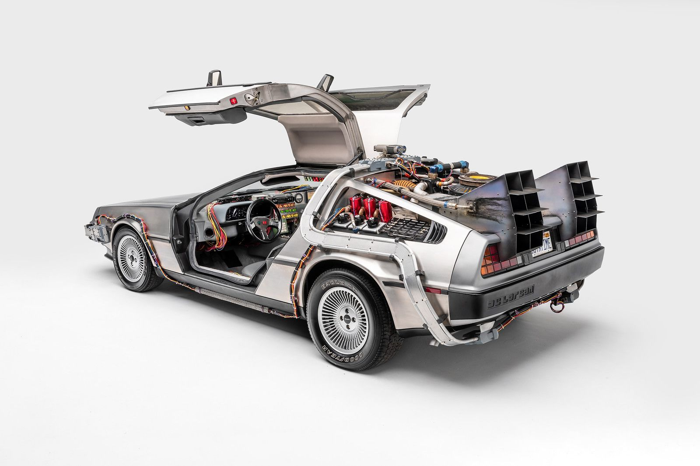

The DeLorean
Back to the Future - 1985

CREATOR : Dr. Emmett "Doc" Brown
DATE CREATED : 1985
About the DeLorean
The DeLorean is a modified DMC-12 sports car transformed into a time machine by Doc Brown. It uses a flux capacitor and must reach 88 miles per hour to initiate temporal travel.